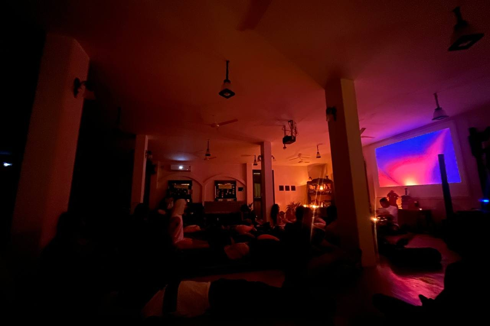
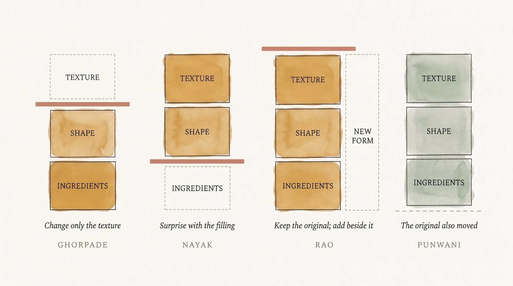

When Tradition Meets the Market
A modak at Ringo, a sparkler left in the sun, and what happens to a tradition when you make it valuable.

Over the Ganesh Chaturthi holidays the kids were at home, so I took them to Ringo, a cafe not far from us. The modaks were on: laminated pastry, ridged like the real thing, each one capped with a glossy dome — hibiscus pink, blackcurrant, pandan green. The kids were delighted and took a long time choosing. Every table had a pamphlet explaining what was in each one.
I was a little winded by the price. But I suppose that’s the deal — refinement and experiment cost something, and somebody pays.
It’s the pamphlet I keep thinking about. A sweet that arrives with an explanation is a sweet in the middle of an argument.
Is that fudge or a modak?
That was the print headline of a piece by Rituparna Roy in Mint Lounge this September, and it asks the question exactly. Every Ganesh Chaturthi the modak gets reinvented, and every year somebody is furious about it. A Delhi creator, Krishna Arora, posted a ravioli modak and got a comment section full of people telling him some things are sacred. He went on to make ten versions, tiramisu and cheesecake among them. Plenty of people tried them anyway.
It isn’t a trivial argument. For many families the modak isn’t just a sweet. It’s an offering, a memory, a shape learned in the kitchen from someone older. The pleated rice-flour shell and the coconut-jaggery filling are familiar for reasons that have nothing to do with taste.
And yet the pleating is mostly gone. Most homes use a mould now. The “authentic” modak the comment section defends is already a simpler version of the one their grandmothers made. The erosion they’re angry about started long before matcha.
What I liked about Roy’s piece is that the chefs disagreed, and that none of them were arguing about whether the modak should change. They were arguing about where. Girish Nayak at Bombay Sweet Shop sells a Bourbon-biscuit modak and killed the matcha one: it has to feel like a modak first and surprise you second. Niyati Rao, whose modaks my kids had just been choosing between, won’t touch something she thinks is already perfect — which is exactly why she feels free to put a croissant modak beside it. “The original versions are good enough to stay alive,” she told Roy. Amit Ghorpade at Aragma in Pune would leave the ingredients alone and change only the texture, swapping the steamed shell for something lighter. Each of them has drawn a line, and no two have drawn it in the same place.
Heena Punwani at Maska said the part I keep coming back to: what we now call authentic also evolved from somewhere else.
That’s a living tradition arguing with itself in public.

The trap
Here’s the uncomfortable part. In the first two pieces I argued for building the layer that makes our traditions readable to outsiders: the critic, the guide, the taxonomy. The modak row is a warning about what happens when you do.
David Harvey, a geographer, wrote an essay in 2002 called “The Art of Rent”. His subject is what he calls monopoly rent: the premium you can charge because you control something distinctive that can’t be copied. A painting, a location, a wine tied to one place. Culture and history create the differences that make something valuable.
Then the contradiction. To earn the premium, people have to be able to buy the thing, visit it, take part in it. The more thoroughly it’s packaged for the market, the more it becomes like everything else. His example is Europe turning its own cities into a theme park: the more Disneyfied it gets, the less special it is.
And a second question that matters as much: who collects the premium? A neighbourhood’s character is made by generations of residents and artists; the rise in property values goes to landlords and developers. The same can happen when a craft becomes desirable and the maker stays at the bottom of the chain. Nolen gur is living it right now: demand from outside Bengal has brought adulteration and over-tapping, and the small brands that made it fashionable are answering with restraint, tapping fewer trees and resting them longer.
Which turns on my own argument. The critic, the guide and the institution I’ve been asking for can help strangers recognise excellence. They can just as easily narrow excellence down to whatever fits their catalogue, and collect the rent on the way.
The same instinct shows up at household scale, and it’s mine.
Before Diwali, my wife wanted to buy some phuljharis. Neither of us is keen on firecrackers — the pollution, mostly — but a few sparklers felt like a small way to take part in the festival. I still had it filed as an errand.
Then, almost in passing, she said the thing that stopped me. She wanted to buy them a few days early and leave them out in the sun, so the moisture would go and they’d light properly.
I remembered doing exactly that as a child. I’d been thinking about two packets of sparklers; she was thinking about a ritual she’d carried from her own childhood. My urge to make it efficient would have skipped the part that mattered.
Tradition isn’t a museum exhibit
Two places I’ve seen a tradition change without freezing.
The first is music. Between roughly 1995 and 2005, a loose group of musicians around what got called Asian Underground, Talvin Singh, Nitin Sawhney, Karsh Kale and others, worked on one problem: how could Indian classical instruments, club culture and electronic production coexist without one merely decorating the other? Kale, at CultureCon this year, put it as returning to one’s own design. Not a sitar as a sign that says “Indian”, but what a musician makes from a real engagement with their own identity and everything around them.
The second I walked into. At Edge City in Goa this autumn I spent evenings in ecstatic dance, contact improvisation and a cacao ceremony. The West took yoga decades ago and gave it a hundred forms; now people are braiding shamanic practice with Indian and Chinese traditions into something new, and I was inside it, not watching from the bank. Some of it was thin. Some of it moved me. All of it was alive, and none of it asked permission from the places it came from.
Who is borrowing, with what understanding, and does the community it came from have a voice or a share? Those are better questions than whether traditions should ever change.
What I’d build toward
So here is where I’ve landed, for now.
Build the layer. The guide, the critic, the vocabulary that lets a stranger tell one thing from another. Our traditions need it, and the makers need the money it brings.
Keep it loose. Loose enough that a chef in Mumbai can reinvent the modak and a producer in Bengal can write about gur like a vintage. The test of any guide or standard is whether the people who keep the tradition still have room to reinterpret it.
And build it so the rent goes to them. Not to whoever owns the catalogue.
Sources and notes
- Rituparna Roy, “Is that fudge or a modak?” (print edition), Mint Lounge, September 2026
- David Harvey, The Art of Rent (2002)
- Rituparna Roy on nolen gur, adulteration and restraint, Mint Lounge, 24 Jan 2026
- Karsh Kale at CultureCon 2026, NCPA Mumbai (from my notes)